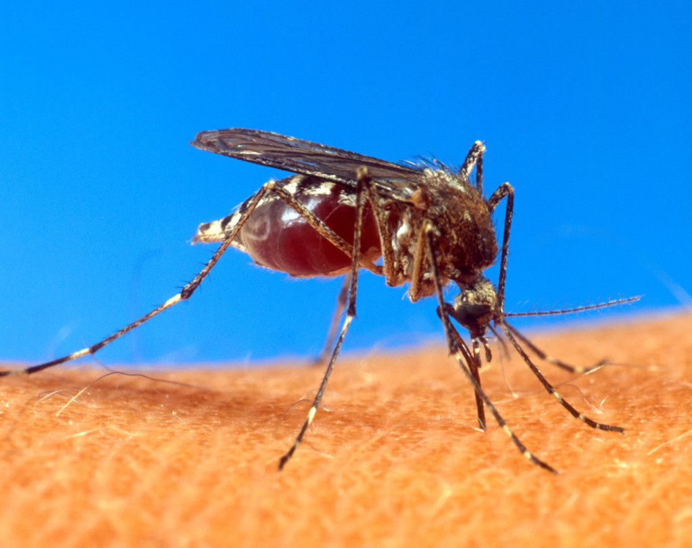

Mosquitoes Are Spreading a Rare Virus Around the World
BRIAN FOY CAME home from a trip to Senegal to study malaria-carrying mosquitoes with a mysterious illness, and it definitely wasn’t malaria. Both Foy and his graduate student soon recovered from the rash and aching joints—“the flu is worse,” says Foy—but it wasn’t until a chance encounter with another mosquito-disease researcher that they connected the dots. That third researcher’s grandfather had helped identify a little-known African virus in the 1940s called Zika, and that’s what Foy and his student had caught.
As the time, Zika was so rare the Centers of Disease Control and Prevention didn’t even think to test their blood for it. “Hardly anyone had heard of Zika,” says Scott Weaver, who studies arthropod-borne viruses at the University of Texas Medical Branch. But that’s not true anymore. In the past year, Zika has spread from Africa and Asia through the Americas. In Brazil, the number of infants born with shrunken, malformed brains has gone up by a factor of 10 since Zika entered the country, and scientists there are trying to establish a causal link to the virus. This month, Zika turned up in Puerto Rico, which prompted the CDC to issue a travel advisory.
Unfortunately, this kind of story is getting familiar. Zika’s global advance mirrors those of dengue fever and Chikungunya, two other mosquito-borne diseases that went from the Old World to the Americas. It’s also unlikely to be the last virus to spread and take hold in dense, tropical cities full of new humans to infect, especially with modern air travel. In fact, says Foy, “I think you would be foolish if you didn’t think that would happen.” Aedes aegypti, the mosquito species that spreads all three of these diseases, is itself an invasive species from Africa. With climate change, the mosquito’s range is also creeping outward from the equator. Infectious disease researchers used to call things like dengue and Chikungunya “tropical;” it’s an increasingly inapt moniker.
Epidemiologists first started paying attention to Zika in 2007, after an outbreak on the island of Yap in Micronesia. One study found that the virus had infected 73 percent of the island’s population. The virus has since hopped along the Pacific islands. It made its way to South America in May 2015.
Since Zika is so rare, scientists are still figuring out the basics. “There are no really good diagnostics for the virus at the moment,” says Alain Kohl, a mosquito-borne disease researcher at the University of Glasgow. The Zika virus is so closely related to the viruses that cause yellow fever and dengue fever that the classic test for Zika—checking a person’s blood for antibodies that bind to the Zika virus—spikes a false positive when it sees antibodies for those other two diseases, too. This is called cross reactivity, and it makes the test close to useless in Brazil, where most people get dengue, get vaccinated against yellow fever, or both, says Weaver. (It is possible to look directly for viral RNA in patient blood, but this method only works in the first few days of infection.)
Weaver is now working with Brazilian researchers to pin down the link between Zika and brain damage in babies. That means figuring out diagnosis criteria more conclusive than the disease’s vaguely flu-like symptoms. Obstetricians in Brazil will now collect umbilical cord blood from newborns, which they can then test for evidence of Zika infection. Since newborn babies have never been ill with dengue nor had the yellow fever vaccine, the antibody test won’t have the cross reactivity problem.
Another wrinkle to figure out: Zika might spread through sex as well as mosquitoes. That would make it extremely odd among viruses. When Foy returned home with Zika, his wife got sick, too—and she didn’t have any mosquito bites. (In fact, as part of the scientific detective story, they were only able to confirm the Zika diagnosis using her blood, as both Foy and his graduate student had been vaccinated for yellow fever—cross reactivity again.)
Weaver’s team is now gearing up for research into vaccines and treatments for Zika, but the best thing anyone can do now is prevent mosquito bites: long pants, long sleeves, mosquito repellant. And if you’re slogging through a rough winter right now, at least you know the bugs hate the cold.
Go Back to Top. Skip To: Start of Article.